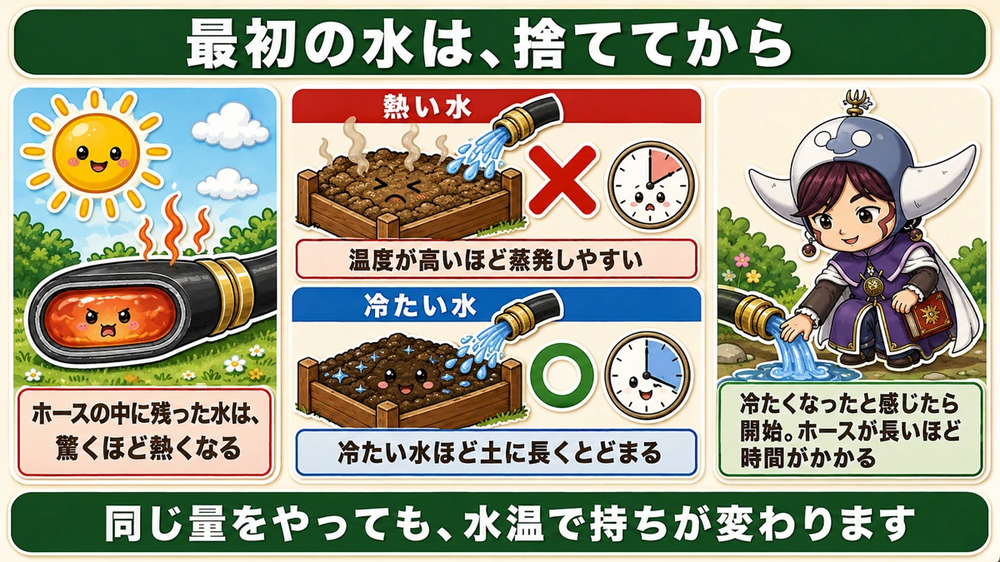
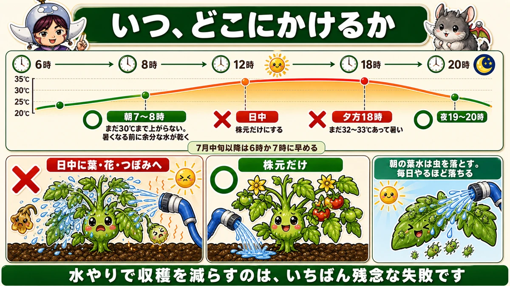
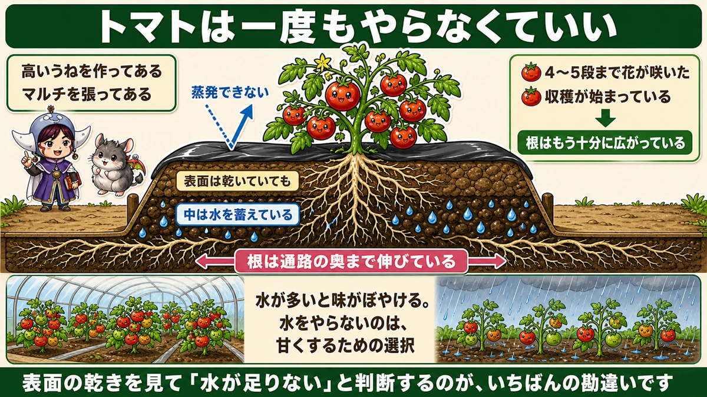
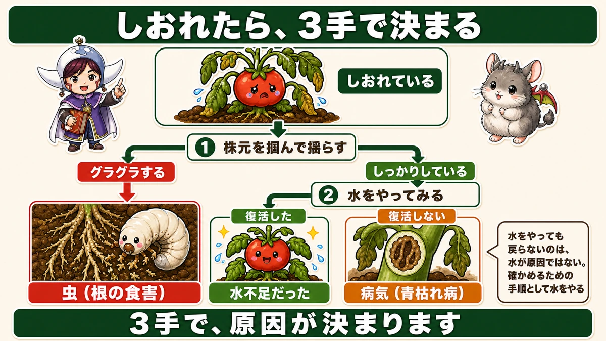

The first water out of the hose is hot 💧 And your summer crops need far less than you think

💧 "I water every day and it still looks unhappy."
💧 "Morning or evening — which is right?"
💧 "It's hot, so surely more water is better."
Hello, I'm Eiko. Eight years of growing vegetables organically and without pesticides, and a teaching licence in science.
Summer watering is, I think, the job people most often overdo with the best of intentions.
Two things up front:
- The first water out of the hose is hot.
- Your summer vegetables don't need nearly as much water as you think.
① The first water out of the hose is hot

What this diagram says （図解の文字）
- Run the first water off before you start
- "Water left inside the hose gets startlingly hot"
- ✗ Hot water — "the warmer it is, the more readily it evaporates"
- ○ Cold water — "cold water stays in the soil longer"
- "Start when it feels cold to the hand. The longer the hose, the longer it takes"
- "The same amount of water lasts a different length of time depending on its temperature"
Pick the hose up on a hot day
It will be hot to the touch. The water standing inside has been sitting in the sun, and a hose is narrow and usually dark, so it heats up remarkably well. Turn it on and what comes out is hot water.
Why that matters more than it sounds
Hot water on leaves, soil, flowers and fruit is bad enough. But there's a second problem.
Hot water dries out very quickly.
The science: the warmer water is, the more readily it evaporates — the molecules are moving faster and escape the surface more easily. Colder water stays in the soil longer.
If you're going to water, you want it to last. The same volume behaves differently depending on its temperature.
What to do: run it until it's cold
Leave the hose running for a while before you start. When it feels cold in your hand, begin. The longer the hose, the longer this takes.
I run the first water onto the path. If it's going to be thrown away, it may as well keep the dust down.
② Where to water, and when

What this diagram says （図解の文字）
- The curve is air temperature through the day: 6:00 / 8:00 / 12:00 / 18:00 / 20:00 against 35 / 30 / 25 / 20 °C (95 / 86 / 77 / 68 °F)
- ○ 7–8 a.m. — "not yet up to 30 °C; the surplus water dries off before the heat"
- ✗ Middle of the day — "base of the plant only"
- ✗ 6 p.m. — "still 32–33 °C, still hot"
- ○ 7–8 p.m. — "from mid-July, shift the morning slot earlier, to 6 or 7"
- ✗ Onto leaves, flowers or buds in the heat of the day ／ ○ base of the plant only
In the heat of the day, water the base only
Don't water leaves or flowers directly during the hot hours.
Leaves, as it happens, don't scorch much. The problem is elsewhere: flowers, buds and fruit are damaged.
- Flowers heat up, scorch and drop off
- Buds deform
- The surface of fruit is marked
Every flower lost is a fruit lost. Reducing your own harvest by watering is the most disappointing mistake there is.
If you must water in the middle of the day, water the base only.
Morning or evening? Either — but the hour matters
- Evening: 7 or 8 p.m. At 6 it can still be 32–33 °C (90–91 °F), and watering while it's hot makes things steamy and close
- Morning: 7 or 8 a.m. Not yet at 30 °C (86 °F), and the surplus water evaporates before the heat arrives
As the season advances, move earlier. Where I am, from mid-July I shift to 6 or 7 a.m., because 8 o'clock is already hot by then. Adjust to your own climate — the principle is "before the heat", not the clock.
Morning leaf-watering knocks pests off
There's a bonus to wetting the whole plant in the morning: water on the leaves dislodges aphids and spider mites. It's the same as brushing them off, done daily — and the more often you do it, the more come off.
"Won't wet leaves cause disease?" Not if you do it in the morning, when they dry before evening. People who have grown without sprays for years all use this.
③ Actually, you may not need to water at all

What this diagram says （図解の文字）
- Outdoor tomatoes may not need watering once
- Conditions: "a high ridge is built", "mulch is laid" → "it can't evaporate"
- "Flowers open on the 4th or 5th truss" ／ "harvest has begun" → "the roots have spread far enough"
- "The surface is dry but there's water stored inside" ／ "the roots reach right out under the path"
- "Too much water and the flavour goes vague. Not watering is a choice made for sweetness"
Two conditions
If both hold, an outdoor tomato may not need watering once all season:
- A high ridge is built
- Mulch is laid
Roots go much further than you think
By summer, the roots reach out under the path — well beyond the ridge.
And the higher the ridge, the more water is stored inside it. The surface may be dry while a little below it is damp, and with mulch on top that water doesn't evaporate.
Judging by the dryness of the surface is the single commonest misreading.
How to know the roots have spread enough
- Flowers have opened on the fourth or fifth truss
- Harvest has started
Either one means the root system is already wide enough.
Less water makes them sweeter
This is where it connects to flavour. Greenhouse tomatoes are sweet because no rain gets in. Outdoors it rains, the water content rises and the taste goes vague.
Tomatoes concentrate as water goes down. Not watering isn't neglect — it's a choice made for sweetness. The same principle as winter vegetables turning sweet: a slightly hard life makes a stronger flavour.
When it wilts: three steps settle it

What this diagram says （図解の文字）
- Wilting? Three steps settle it
- 1 "Take hold of the base and rock it" → wobbly = pests (roots eaten) ／ firm → step 2
- 2 "Try watering" → recovers = it was short of water ／ doesn't recover = disease (bacterial wilt)
- "Not recovering after watering doesn't mean water was the cause. You water in order to find out"
Deciding not to water doesn't stop a plant wilting, and that's alarming. So make the diagnosis explicit:
- Take hold of the base and rock it. Wobbly → pests have eaten the roots
- Firm? Then water it.
- Recovers → it was short of water. Doesn't recover → it's disease
Three steps and you have your answer.
"I watered and it didn't come back" isn't about the water
A common misreading. Failing to recover doesn't mean the water caused a disease. The plant was already ill, and the symptom simply resembled thirst. Watering wasn't a mistake — it was the test.
Containers are a different story
- The volume of compost is fixed
- Roots can't escape outwards
- Water drains straight out of the bottom
There's no reservoir lower down the way there is in a ridge.
So in summer, water containers every day, in the morning. Overwatering does kill container plants — but that's mainly a winter problem. In summer, too dry is far more common. Touch the surface with a finger; if it's dry, water. Keep up that one check.
To sum up
- ✅ The first water out of the hose is hot. Run it off until it feels cold
- ✅ Hot water evaporates fast; cold water stays in the soil longer
- ✅ Don't water leaves, flowers or buds in the heat — leaves don't scorch, but flowers do, and they drop
- ✅ Mid-day watering: base of the plant only
- ✅ Morning or evening both work — around 7–8, moving earlier as summer deepens
- ✅ Morning leaf-watering knocks off aphids and mites, and doesn't cause disease
- ✅ With a high ridge and mulch, outdoor tomatoes may need no watering at all
- ✅ Don't judge by the dry surface. The roots are out under the path
- ✅ Less water, more flavour
- ✅ Wilting: rock it → water it → see if it recovers. Three steps
- ✅ Containers are the exception — every morning in summer
You don't have to do all of it. Tomorrow morning, pick up the hose. If it's hot, let it run for a while. That's enough for today 💧
Thank you for reading!